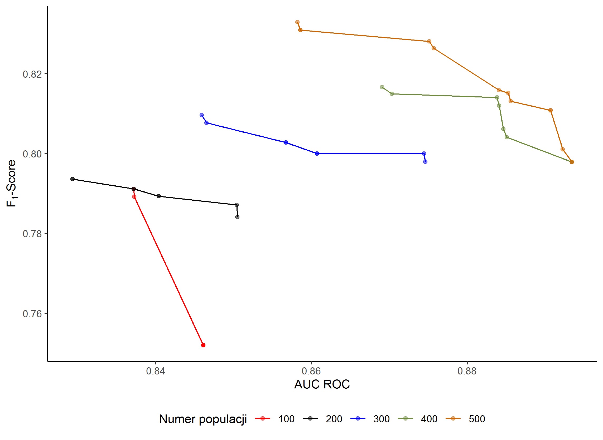
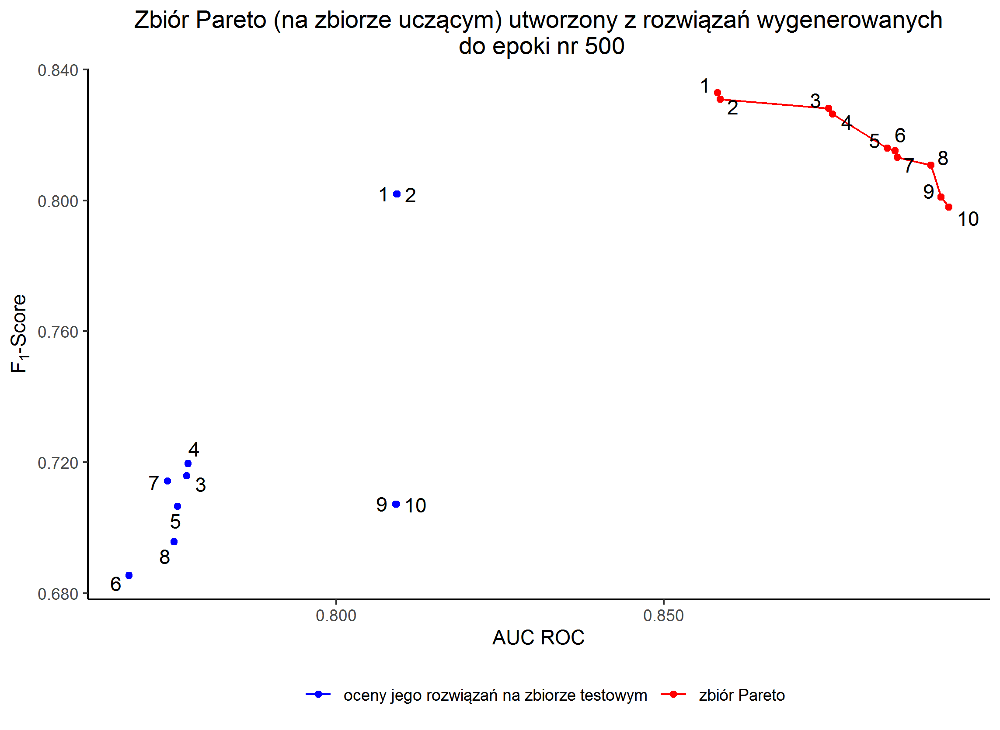
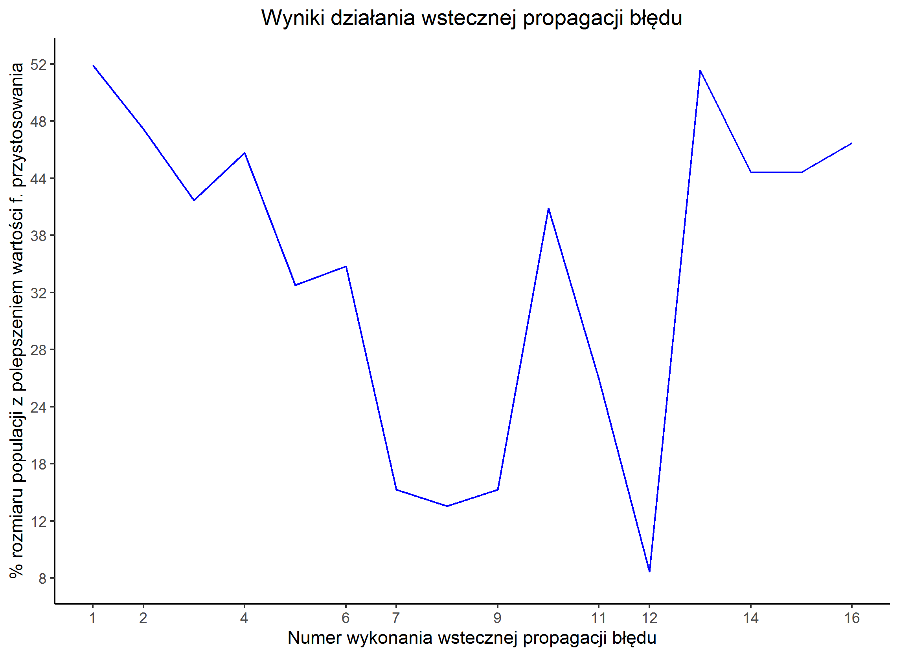
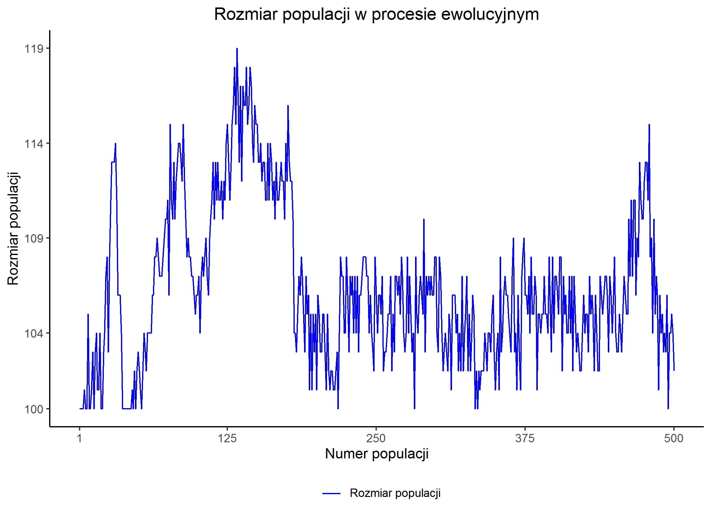
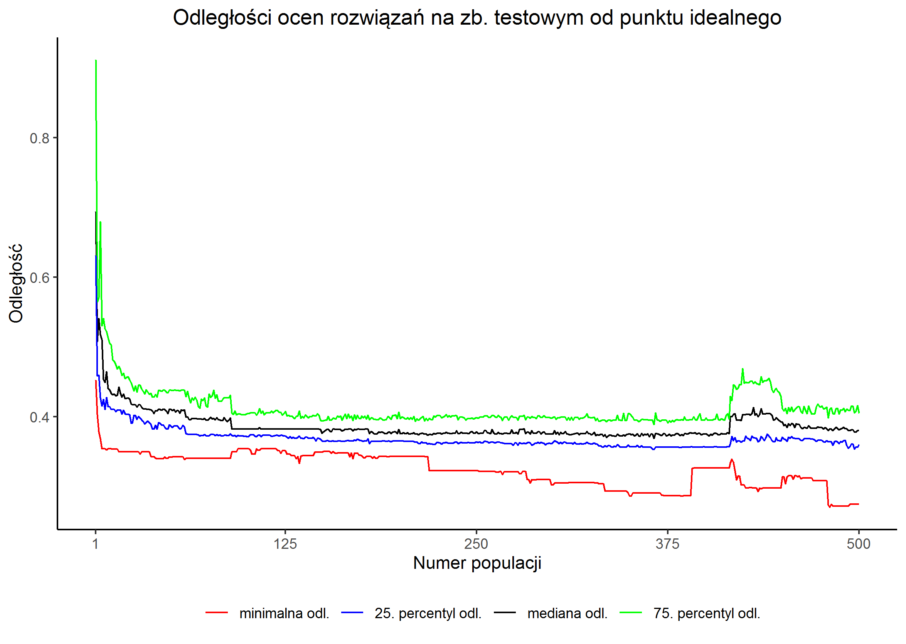

Eksperyment nr 3
5.3 Wyznaczanie reprezentacji klasyfikatorów Pareto-optymalnych
Konfiguracja eksperymentu
| Konfiguracja | konfiguracja |
|---|---|
| Rozdział z rozprawy | 5.3 Wyznaczanie reprezentacji klasyfikatorów Pareto-optymalnych |
| Liczba obserwacji | zbiór uczący: 400 zbiór testowy: 200 |
| Liczba epok | 500 |
| Kryterium | Ocena wielokryterialna oparta o: - AUC ROC - F1-Score |
| Ziarna generatora liczb losowych | skrypt przygotowujący dane: 2357 eksperyment: 3771 |
| Wybrana kompromisowa sieć neuronowa | Epoka uzyskania osobnika: 481 wizualizacja genomu |
Oceny
Na zbiorze uczącym
- Trafność
- -
- F1-Score
- 0,826087 (*)
- AUC ROC
- 0,856150 (*)
Na zbiorze testowym
- Trafność
- 0,8050
- F1-Score
- 0,807882 (*)
- AUC ROC
- 0,809900 (*)
Rysunki




